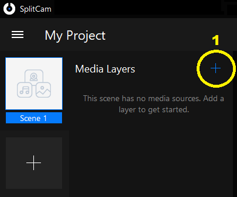
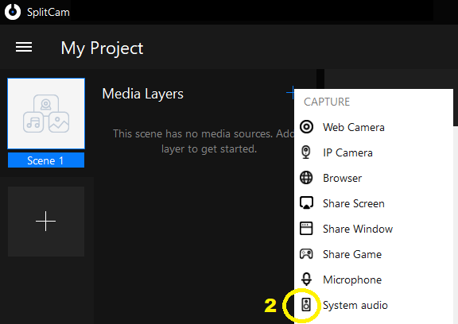
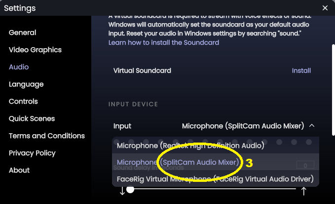
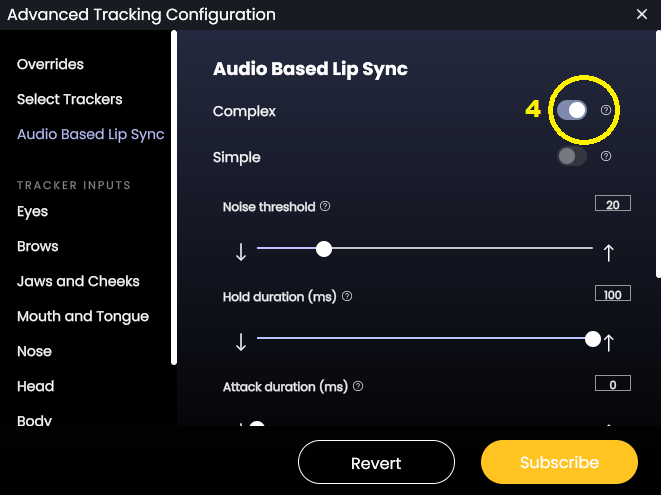

Animaze Desktop: How can I feed audio files directly into Audio Based Lip Sync?
You can use SplitCam to have the avatar lip sync to a sound file. Here are the steps on how to achieve that:
Download SplitCam for free on their official website: https://splitcam.com/ and then create a scene by clicking on Media Layers (plus sign)

Select System Audio

Go into the Animaze app > Settings > Audio and select the SplitCam Microphone as the input source in Animaze

In the Animaze app, go to Account > Tracking Configuration > Audio based lip sync and turn it on

Play an audio file on your computer and the avatar will lip sync to the audio file!